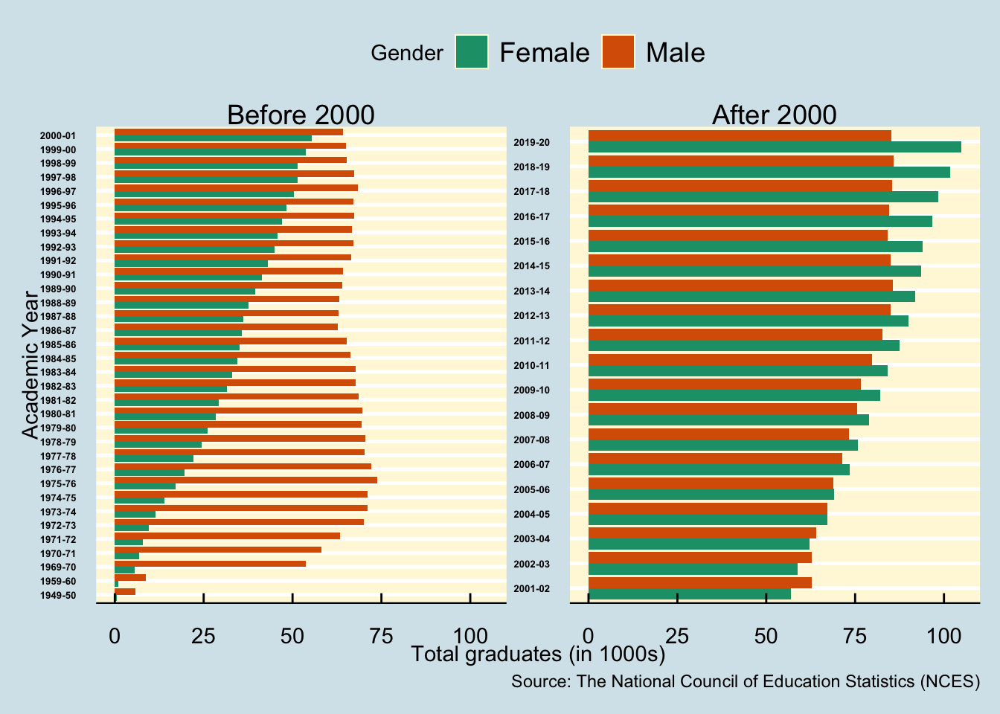
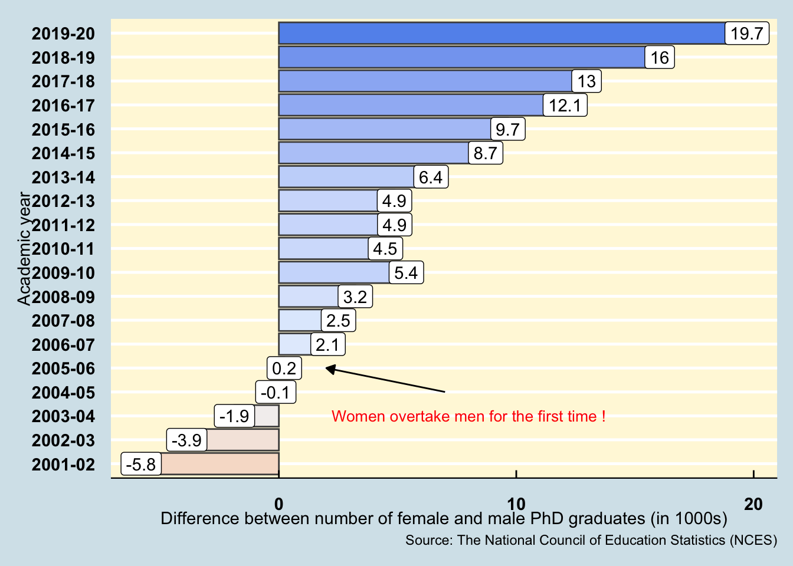
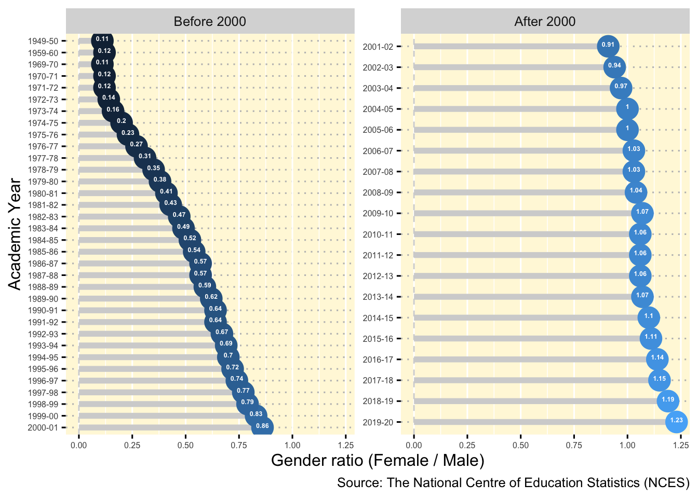

| Year | Male | Female | History |
|---|---|---|---|
| 2019-20 | 85.23 | 104.95 | Post 2000 |
| 2018-19 | 85.77 | 101.81 | Post 2000 |
| 2017-18 | 85.39 | 98.35 | Post 2000 |
| 2016-17 | 84.65 | 96.71 | Post 2000 |
| 2015-16 | 84.24 | 93.89 | Post 2000 |
| 2014-15 | 84.92 | 93.63 | Post 2000 |

1 Introduction
For many centuries, women have been discriminated against when it comes to the field of education and employment. The results of such heinous acts are often observed to affect the growth of women in many countries even today. Societal pressure due to the “ancient” ways of considering women to not be fit enough to study or take up positions of power have significantly curbed their confidence.
Access to quality education often leads to higher opportunities, with accomplishments often being closely associated with higher level of schooling and the quality of schooling. However, the brazen discrimination against women was a well accepted way of life in many countries including the current day developed nations. A study by Eisenmann (2007) observed that beliefs about women over time led to three expectations about their educational participation: initially, that women were not interested in schooling; later, that they were not capable of advanced education; and throughout the 19th and 20th centuries, that they were best educated in segregated settings with separate curricula.
Such a biased thinking process inevitably led to misinterpretations regarding women: first, that they “feminized” certain fields, driving men out; second, that they have been minor and unsuccessful participants in science; and third, that in the early post-World War II era their educational participation was merely incidental. In many ways, when women’s performance defied expectation, people tended to see what they expected rather than analyzing what the behavior actually meant, and women’s momentum in higher education remains inhibited by these earlier beliefs. Despite various studies such as the one by Gillooly, Hardt, and Smith (2021) reporting a significant advantage in the overall learning of the cohort when placed in a diverse environment, there has still been a disappointing historical push back from the society to be inclusive towards women.
Note
If you’re interested to look into the R-code which went into analysing the current report, please feel free to go through the markdown files on my GitHub repository.
I have also created an R-shiny application to visualise and analyse the current data. Feel free to check it out here.
Aim of the current analysis
The current analysis is aimed at uncovering the data to analyse the current state of women in higher education in The United States, particularly in the research field where women were long neglected. For this study, we will be looking into the number of PhD graduates across the United States between the period of 1950-2020.
2 Where is the data coming from 💁♂️ ?
Before we proceed further with our analysis, it is important to figure out the source and the authenticity of the data.
The data for the fields of research of the various graduating PhDs have been released by The National Centre of Education Statistics (NCES) and can be downloaded from the website of Statista here.
3 How does the data look like 🔍 ?
Once we have ascertained the source and authenticity of our data, we will now obtain a glimpse of the dataset. The dataset contains a total of 53 rows and 4 columns.
4 What does the data mean 🤔 ?
Once the data has been read in and checked though Table 1, let us understand what do these variables mean. The metadata for the dataset has been described through Table 2.
| Variable | Class | Description |
|---|---|---|
| Year | character | Academic year |
| Male | double | Number of male PhD graduates (in 1000s) |
| Female | double | Number of female PhD graduates (in 1000s) |
| History | character | Marker for pre or post 2000 |
5 What insights can we gain from the data 🎯📊?
5.1 Are we observing a shift towards more women in research ?
In order to answer this question, we need to look into the gender diversity among the PhD graduates in the previous century. Consequently, we will attempt to study the trend of the PhD graduates for the years prior to the year of 2000 and compare the current gender diversity in years after 2000.

Figure 1 illustrates the number of male and female PhD graduates before and after the year 2000. We can observe that the number of male PhD graduates have remained fairly constant during the period between 1949-2000 while the number of female PhD graduates started from a very small group in 1950 but have been constantly on a rise till the end of the century. This suggests that the research field in the United States have witnessed an encouraging rise in the gender distribution among the PhD graduates.
In the current century, we have observed that the number of female PhD graduates are constantly on a rise and have even gone on to exceed the number of male PhD graduates in the United States.
Key takeaway
Even though women have had to face discrimination in the field of research, however, their story of persevering through the hardships and in large numbers as observed through their meteoric rise in the PhD graduates indicates that there is a flourishing and encouraging gender diversity among the PhD graduates in the United States today.
5.2 When did the major shift happen 🔬?
As explained and visualised in Section 5.1, the number of women PhD graduates were on a constant rise ever since the year of 1950 and have now exceeded the number of male PhD graduates. We would like to observe the exact time period when this major milestone occured.

Figure 2 illustrates the difference between the number of female and male PhD graduates in The United States. As concluded in previous sections, we have established a constant rise in the number of female PhD graduates. However, only in the academic year of 2005-06, we have observed that the number of female PhD graduates have now exceeded the number of male PhD graduates in The US.
Key takeaway
The year of 2005-06 indeed marks a major milestone in the higher education history of The United States where female PhD graduates have now outnumbered male PhD graduates, indicating a flourishing rise of gender diversity in the country. The number of female PhD graduates have continued to grow at a constant pace and have been observed to exceed the male graduates by nearly 20000 in the academic year of 2019-20.
5.3 Can we use a better statistic to understand this data 🤔?
While we have dealt with the raw number of PhD graduates for each gender so far, however, to make our understanding more intuitive, we rely upon the metric of gender ratio. Such a metric is often used as a key indicator to study the gender distribution. In our analysis, the gender ratio will be defined as the ratio of the number of female PhD graduates to the male PhD graduates.

Figure 3 provides a visual illustration of the constant rise in number of female PhD graduates in The United States. In the year of 1949-50, the gender ratio was observed to be a measly 0.11 which has grown to 1.23 by the year of 2019-20.
Key takeaway
Usage of the gender ratio metric allows us to investigate the gender diversity and the gender gap without having to look into the detailed numbers and calculations. This makes the analysis much more intuitive and easy to understand.
6 What did we learn from the current analysis 💡 ?
Based on our detailed analysis in Section 5, here are our key takeaways:
Even though women have had to face discrimination in the field of research, however, their story of persevering through the hardships and in large numbers as observed through their meteoric rise in the PhD graduates indicates that there is a flourishing and encouraging gender diversity among the PhD graduates in the United States.
The period encompassing 2005 to 2006 stands as a significant moment in the history of higher education in the United States. During this time, there was a notable shift where the number of women obtaining PhD degrees surpassed that of their male counterparts. This shift signaled a pronounced increase in gender diversity within the country’s higher education system. Subsequently, the trend of female PhD graduates consistently expanded, resulting in a noteworthy margin of nearly 20,000 more female graduates than male graduates during the 2019-20 academic year.
Studying a metric such as the gender ratio makes the data easy to read and improves its intuition. While the gender ratio among women PhD graduates initiated at 0.11, the value has now risen to 1.23, marking a significant shift towards gender diversity.
The encouraging metrics suggest that the higher education sector has successfully managed to curb gender discrimination with more women now involved in the field of research than ever before.
Session information
─ Session info ───────────────────────────────────────────────────────────────
setting value
version R version 4.4.0 (2024-04-24)
os macOS Sonoma 14.4.1
system aarch64, darwin20
ui X11
language (EN)
collate en_US.UTF-8
ctype en_US.UTF-8
tz Australia/Melbourne
date 2024-05-14
pandoc 3.1.12.1 @ /usr/local/bin/ (via rmarkdown)
─ Packages ───────────────────────────────────────────────────────────────────
package * version date (UTC) lib source
abind 1.4-5 2016-07-21 [1] CRAN (R 4.4.0)
backports 1.4.1 2021-12-13 [1] CRAN (R 4.4.0)
bit 4.0.5 2022-11-15 [1] CRAN (R 4.4.0)
bit64 4.0.5 2020-08-30 [1] CRAN (R 4.4.0)
broom 1.0.5 2023-06-09 [1] CRAN (R 4.4.0)
car 3.1-2 2023-03-30 [1] CRAN (R 4.4.0)
carData 3.0-5 2022-01-06 [1] CRAN (R 4.4.0)
cli 3.6.2 2023-12-11 [1] CRAN (R 4.4.0)
colorspace 2.1-0 2023-01-23 [1] CRAN (R 4.4.0)
crayon 1.5.2 2022-09-29 [1] CRAN (R 4.4.0)
data.table 1.15.4 2024-03-30 [1] CRAN (R 4.4.0)
digest 0.6.35 2024-03-11 [1] CRAN (R 4.4.0)
dplyr * 1.1.4 2023-11-17 [1] CRAN (R 4.4.0)
DT * 0.33 2024-04-04 [1] CRAN (R 4.4.0)
evaluate 0.23 2023-11-01 [1] CRAN (R 4.4.0)
fansi 1.0.6 2023-12-08 [1] CRAN (R 4.4.0)
farver 2.1.1 2022-07-06 [1] CRAN (R 4.4.0)
fastmap 1.1.1 2023-02-24 [1] CRAN (R 4.4.0)
forcats * 1.0.0 2023-01-29 [1] CRAN (R 4.4.0)
generics 0.1.3 2022-07-05 [1] CRAN (R 4.4.0)
ggplot2 * 3.5.1 2024-04-23 [1] CRAN (R 4.4.0)
ggpubr * 0.6.0 2023-02-10 [1] CRAN (R 4.4.0)
ggrepel * 0.9.5 2024-01-10 [1] CRAN (R 4.4.0)
ggsignif 0.6.4 2022-10-13 [1] CRAN (R 4.4.0)
ggthemes * 5.1.0 2024-02-10 [1] CRAN (R 4.4.0)
glue 1.7.0 2024-01-09 [1] CRAN (R 4.4.0)
gtable 0.3.5 2024-04-22 [1] CRAN (R 4.4.0)
highr 0.10 2022-12-22 [1] CRAN (R 4.4.0)
hms 1.1.3 2023-03-21 [1] CRAN (R 4.4.0)
htmltools 0.5.8.1 2024-04-04 [1] CRAN (R 4.4.0)
htmlwidgets 1.6.4 2023-12-06 [1] CRAN (R 4.4.0)
httr 1.4.7 2023-08-15 [1] CRAN (R 4.4.0)
jsonlite 1.8.8 2023-12-04 [1] CRAN (R 4.4.0)
kableExtra * 1.4.0 2024-01-24 [1] CRAN (R 4.4.0)
knitr 1.46 2024-04-06 [1] CRAN (R 4.4.0)
labeling 0.4.3 2023-08-29 [1] CRAN (R 4.4.0)
lazyeval 0.2.2 2019-03-15 [1] CRAN (R 4.4.0)
lifecycle 1.0.4 2023-11-07 [1] CRAN (R 4.4.0)
lubridate * 1.9.3 2023-09-27 [1] CRAN (R 4.4.0)
magrittr 2.0.3 2022-03-30 [1] CRAN (R 4.4.0)
munsell 0.5.1 2024-04-01 [1] CRAN (R 4.4.0)
patchwork * 1.2.0 2024-01-08 [1] CRAN (R 4.4.0)
pillar 1.9.0 2023-03-22 [1] CRAN (R 4.4.0)
pkgconfig 2.0.3 2019-09-22 [1] CRAN (R 4.4.0)
plotly * 4.10.4 2024-01-13 [1] CRAN (R 4.4.0)
purrr * 1.0.2 2023-08-10 [1] CRAN (R 4.4.0)
R6 2.5.1 2021-08-19 [1] CRAN (R 4.4.0)
RColorBrewer 1.1-3 2022-04-03 [1] CRAN (R 4.4.0)
Rcpp 1.0.12 2024-01-09 [1] CRAN (R 4.4.0)
readr * 2.1.5 2024-01-10 [1] CRAN (R 4.4.0)
rlang 1.1.3 2024-01-10 [1] CRAN (R 4.4.0)
rmarkdown 2.26 2024-03-05 [1] CRAN (R 4.4.0)
rstatix 0.7.2 2023-02-01 [1] CRAN (R 4.4.0)
rstudioapi 0.16.0 2024-03-24 [1] CRAN (R 4.4.0)
scales * 1.3.0 2023-11-28 [1] CRAN (R 4.4.0)
sessioninfo * 1.2.2 2021-12-06 [1] CRAN (R 4.4.0)
stringi 1.8.4 2024-05-06 [1] CRAN (R 4.4.0)
stringr * 1.5.1 2023-11-14 [1] CRAN (R 4.4.0)
svglite 2.1.3 2023-12-08 [1] CRAN (R 4.4.0)
systemfonts 1.0.6 2024-03-07 [1] CRAN (R 4.4.0)
tibble * 3.2.1 2023-03-20 [1] CRAN (R 4.4.0)
tidyr * 1.3.1 2024-01-24 [1] CRAN (R 4.4.0)
tidyselect 1.2.1 2024-03-11 [1] CRAN (R 4.4.0)
tidyverse * 2.0.0 2023-02-22 [1] CRAN (R 4.4.0)
timechange 0.3.0 2024-01-18 [1] CRAN (R 4.4.0)
tzdb 0.4.0 2023-05-12 [1] CRAN (R 4.4.0)
utf8 1.2.4 2023-10-22 [1] CRAN (R 4.4.0)
vctrs 0.6.5 2023-12-01 [1] CRAN (R 4.4.0)
viridisLite 0.4.2 2023-05-02 [1] CRAN (R 4.4.0)
vroom 1.6.5 2023-12-05 [1] CRAN (R 4.4.0)
withr 3.0.0 2024-01-16 [1] CRAN (R 4.4.0)
xfun 0.43 2024-03-25 [1] CRAN (R 4.4.0)
xml2 1.3.6 2023-12-04 [1] CRAN (R 4.4.0)
yaml 2.3.8 2023-12-11 [1] CRAN (R 4.4.0)
[1] /Library/Frameworks/R.framework/Versions/4.4-arm64/Resources/library
──────────────────────────────────────────────────────────────────────────────References
Eisenmann, Linda. 2007. “The Impact of Historical Expectations on Women’s Higher Education.” In Forum on Public Policy Online, 2007:n3. 3. ERIC.
Gillooly, Shauna N, Heidi Hardt, and Amy Erica Smith. 2021. “Having Female Role Models Correlates with PhD Students’ Attitudes Toward Their Own Academic Success.” Plos One 16 (8): e0255095.